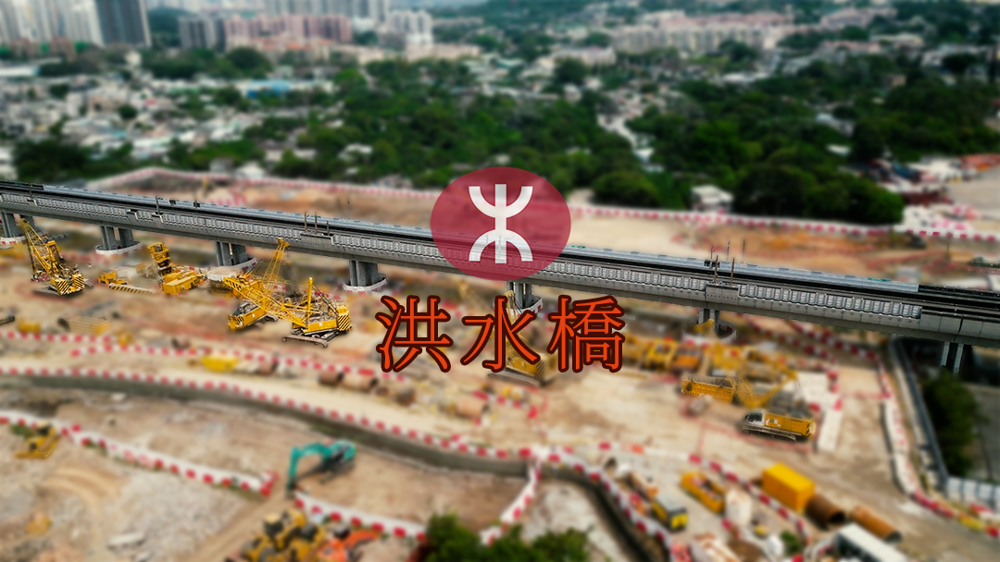
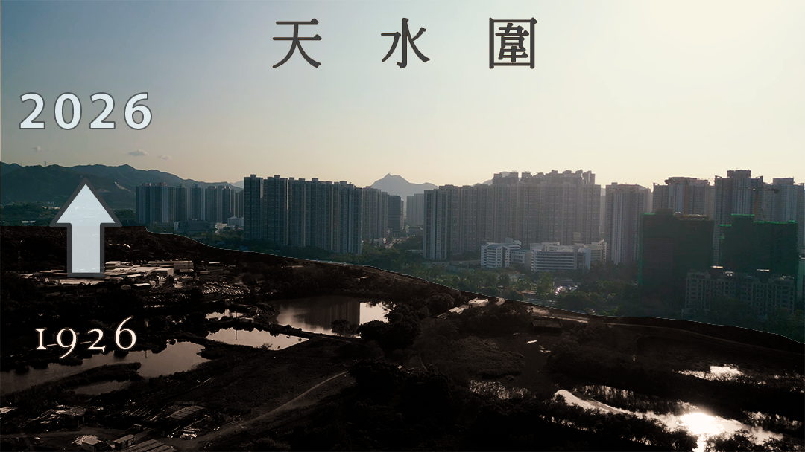
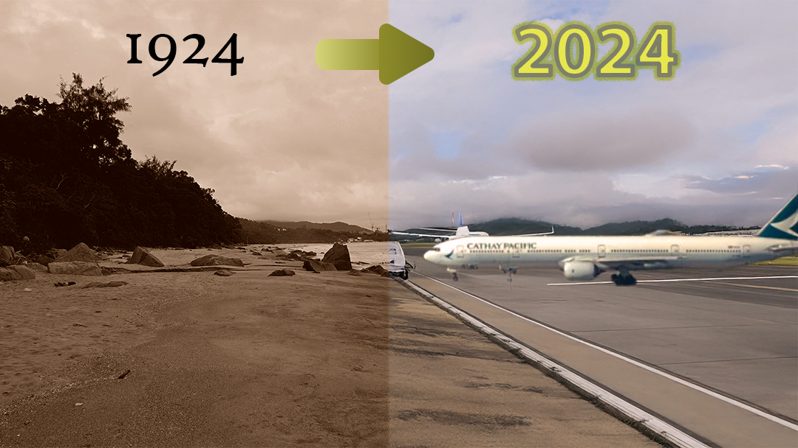

Showcasing my best work and creative projects

Deep-dive into government policies and urban planning for the Hung Shui Kiu-Ha Tsuen development area
20:06 | May 2026

Exploring the history, development, and challenges of Tin Shui Wai, a new town in Hong Kong.
15:13 | March 2026

Digging out the lesser-known stories from multiple history books that shaped Chek Lap Kok Island.
17:47 | Decemeber 2024